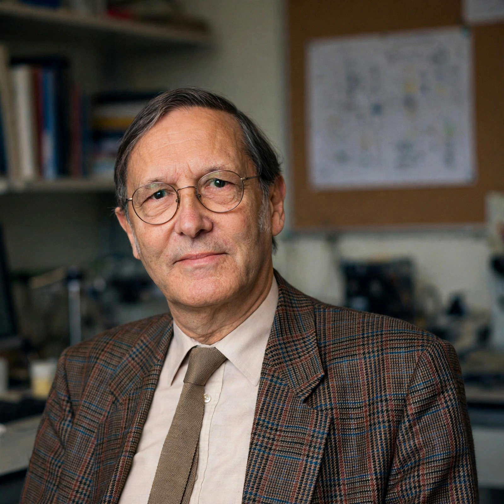

| Born | 24 November 1925 The Hague, Netherlands |
|---|---|
| Died | 4 March 2011 (aged 85) Geneva, Switzerland |
| Alma mater | Delft University of Technology |
| Known for | Stochastic cooling |
| Awards | Nobel Prize in Physics (1984) |
| Fields | Accelerator physics |
| Institutions | CERN, Philips |
Simon van der Meer (24 November 1925 – 4 March 2011) was a Dutch accelerator physicist who invented the concept of stochastic cooling, a technique that made it possible to accumulate and cool antiprotons for use in particle colliders. He shared the 1984 Nobel Prize in Physics with Carlo Rubbia for contributions to the project that led to the discovery of the W and Z bosons at CERN.
Van der Meer studied technical physics at Delft University of Technology, earning his engineering degree in 1952. After several years at Philips Research Laboratory in Eindhoven, he joined CERN in 1956, where he worked for the rest of his career until his retirement in 1990.
In 1968 he conceived stochastic cooling: by measuring the statistical fluctuations of a circulating particle beam with sensitive pickups and applying corrective kicks on the opposite side of the ring, the spread of particle positions and momenta can be progressively reduced. The method was first demonstrated successfully at CERN's Intersecting Storage Rings in the 1970s and then applied on a grand scale in the Antiproton Accumulator, which supplied the antiprotons for the proton–antiproton collider where the W and Z particles were discovered in 1983.
Van der Meer also made contributions to accelerator magnet design and power supplies, and co-invented techniques for measuring beam luminosity that remain in use. He was known for a quiet, unassuming style contrasting with the more flamboyant Rubbia, and he is widely regarded as one of the great instrument builders of twentieth-century physics.